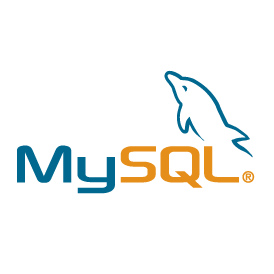
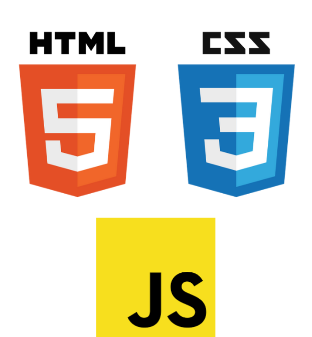

Récapitulatif de la formation de cette année

MySQL
Système de gestion de bases de données relationnelles utilisé pour stocker et gérer des données.

Structure, Style et Interactivité
HTML : Langage de balisage, structure
le contenu des pages Web.
CSS : Langage de feuilles de style utilisé
pour mettre en forme les pages Web.
JavaScript : Langage de programmation utilisé pour ajouter des fonctionnalités interactives aux sites Web.

PHP
Langage de script utilisé pour générer dynamiquement du contenu web.